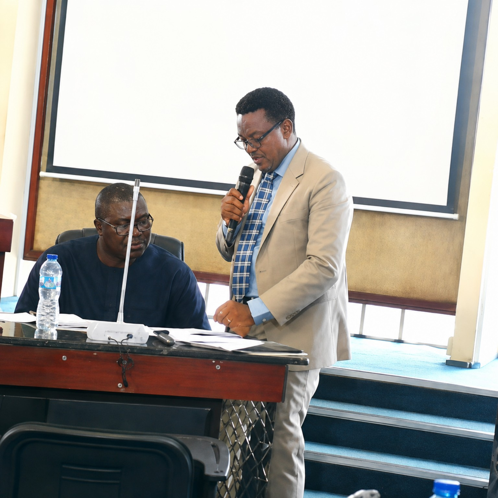

2019
Maiden Edition
24 October 2019
Nigerian Institute of International Affairs (NIIA), Victoria Island, Lagos.
Theme: Harnessing Sustainable Agricultural Innovations for Economic Development.
- 125 attendees
- Chairman: Mr. Taiwo Obe
- Moderator: Mr. John Ogunlela
- Keynote: Dr. Kanayo F. Nwanze
- Research presentations, panels and innovation expo